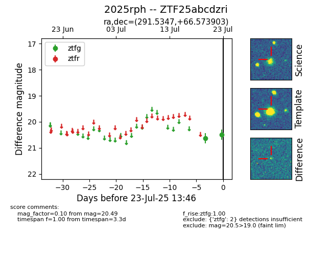

Target ZTF25abcdzri at 2025-07-23 13:46, see:
FINK: fink-portal.org/ZTF25abcdzri
Lasair: lasair-ztf.lsst.ac.uk/objects/ZTF25abcdzri
ALeRCE: alerce.online/object/ZTF25abcdzri
TNS: wis-tns.org/object/2025rph
YSE: ziggy.ucolick.org/yse/transient_detail/2025rph
alt names
ZTF25abcdzri (ztf,fink)
2025rph (tns,yse)
coordinates:
equatorial (ra, dec) = (291.5347,+66.57390)
galactic (l, b) = (97.9617,+21.40939)
photometry
last ztfg=20.49
2 ztfg detections
